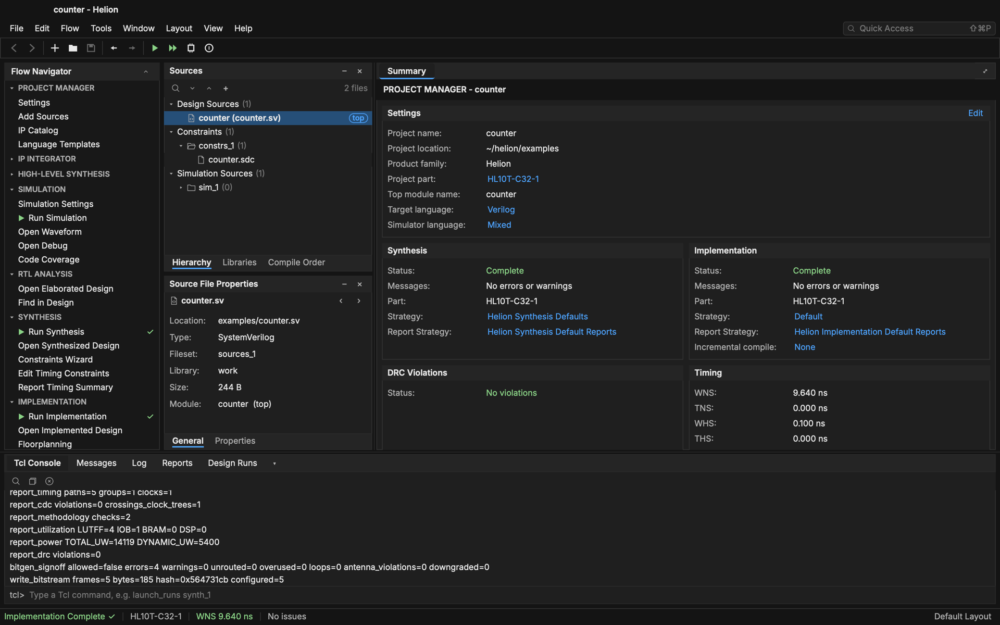
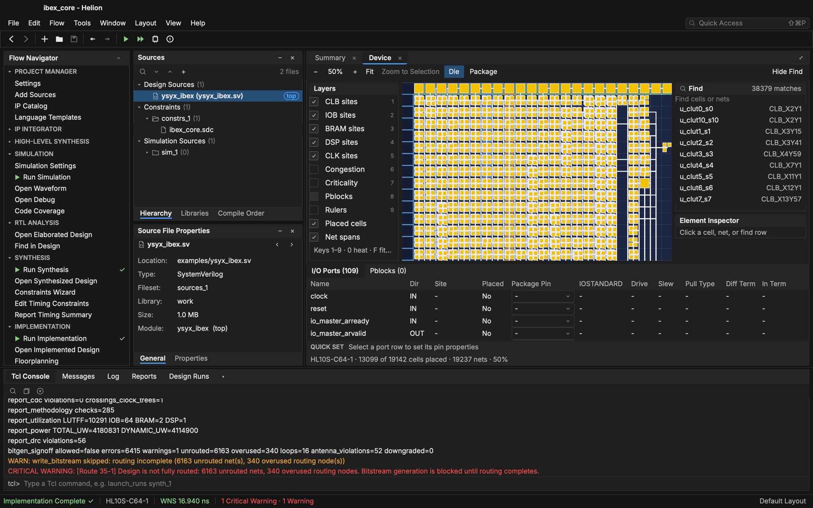
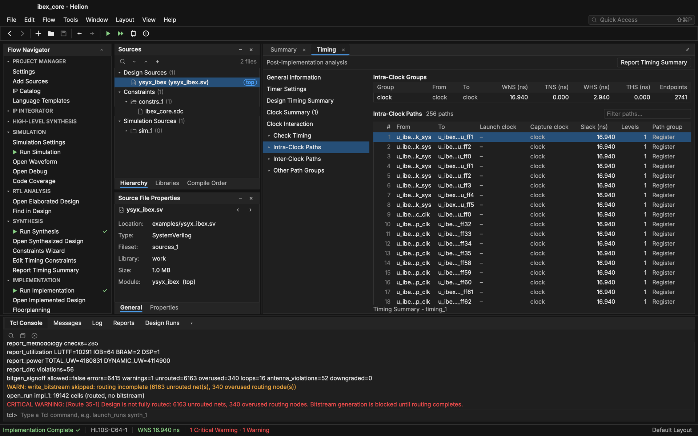
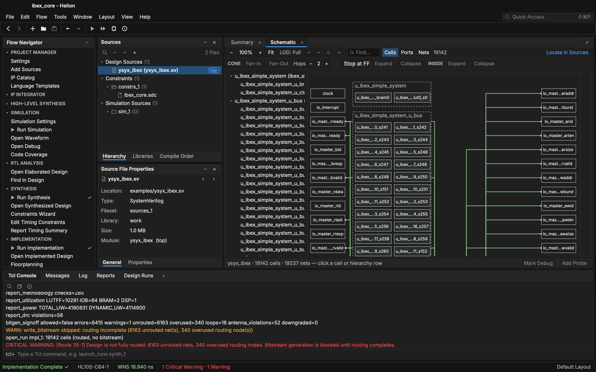
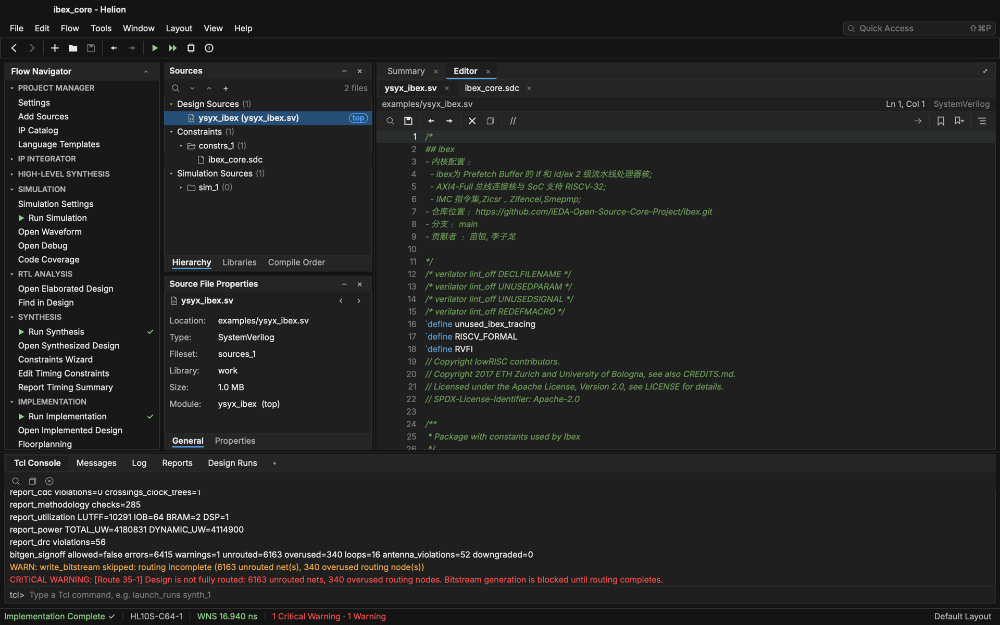
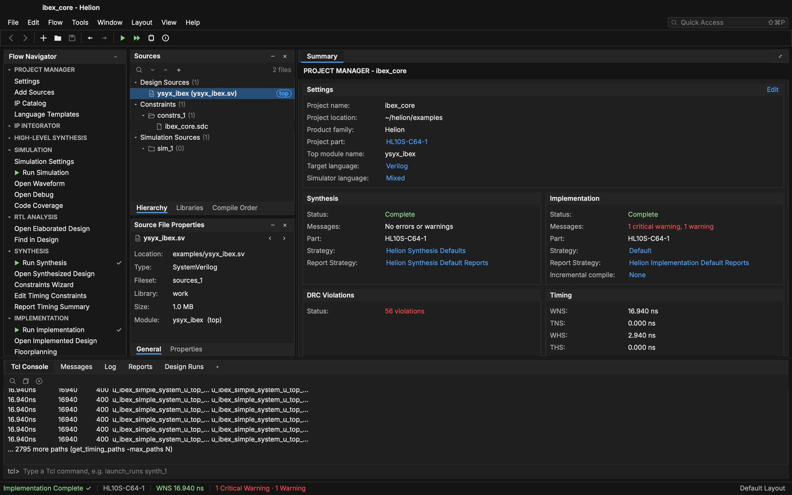

The whole FPGA flow, open source.
Helion is an original FPGA family (HL10) and the open-source CAD suite that targets it, written in Rust. Synthesize, place, route, analyze timing, simulate and program from one CLI or one desktop IDE. It is not a vendor-tool wrapper: no vendor tools, libraries or databases are involved.

helion-ide after running implementation on the full ysyx Ibex RV32 core (HL10S-C64-1).counter.sv, checked in CIEvery view, on real data
helion-ide is a Vivado-style desktop IDE built on the Rune UI framework. Every view reads the same engines as the CLI, and every control either does real work or says why it cannot. These screenshots are a real run of the full Ibex RV32 core.





report_utilization and report_timing -max_paths 5 after implementation.From RTL to a programmed board
Each stage is its own Rust crate. The CLI, the Tcl console and the IDE all drive the same engines.
Design entry and synthesis
- SystemVerilog (IEEE 1800 synthesizable subset) and VHDL-2008 subset
- C high-level synthesis with directives and C/RTL co-simulation
- AIG synthesis with ABC-style rewriting, LUT6 mapping, carry, DSP and RAM inference
- Out-of-context modules, IP packages, IP Catalog and block design
Implementation
- Packing, placement and PathFinder routing; pblock regions
- Design runs with strategies, seed sweeps and checkpoints
- ECO edits with incremental bitstreams; partial reconfiguration (DFX)
- Bitstreams for HL10, iCE40, ECP5 and Xilinx 7-series
Analysis
- Static timing: WNS/TNS, hold, paths, clocks, clock interaction
- XDC/SDC constraints, a Constraints Wizard, CDC with eleven violation classes
- Utilization, vectorless and VCD-driven power, DRC and methodology
- Control sets, SSN, IBIS and QoR suggestions
Simulation and verification
- Event simulator and cycle-level fabric model
- SystemVerilog testbenches with a UVM subset; VHDL testbenches
- Waveforms with cursors, analog display and protocol decoders
- Line and branch coverage, SVA subset, SAT equivalence checking
Hardware and debug
- Hardware Manager: simulated cable, openFPGALoader, native FTDI JTAG
- JTAG chain scans verified on a real ZedBoard, 1 to 30 MHz
- ILA, VIO and JTAG-to-AXI over any JTAG cable
- Configuration memory: erase, program, verify, read back
The IDE
- Flow Navigator, Sources, Summary, dockable panes, command palette
- Device view with I/O planning, package pins, pblocks and heat maps
- Tcl console on the same engines as every button
- Windowless modes for scripts and CI:
--headless,--source,--stdin
Supported device families
HL10 is Helion's own architecture, defined in the Helion architecture database (HAD). The vendor-family backends are built only on open bitstream documentation.
| Family | Parts | Output | Checked against |
|---|---|---|---|
| Helion HL10 | HL10T-C32-1, HL10T-DSP1, HL10S-C64-1, HL10M-C128-1 | .hbits | Gold QoR tests; Helion's fabric model and simulator |
| Lattice iCE40 | ice40-hx8k | IceStorm .asc | Round-trips through icepack and iceunpack |
| Lattice ECP5 | LFE5U-85F | Trellis text config | Accepted by ecppack |
| Xilinx 7-series | xc7a35t | FASM, frames, .bit | prjxray FASM-to-frames; needs the Project X-Ray database |
There is no HL10 silicon: HL10 bitstreams run on Helion's fabric model. iCE40, ECP5 and 7-series bitstreams are checked against the open toolchains but have not yet been tested on boards. Part details.
The gold numbers
Every change is held to these. The QoR tests fail if a number moves without a reason recorded in the same commit, and CI checks the counter on every push.
| Design (empty XDC, HL10T-C32-1) | LUTFF | WNS_PS |
|---|---|---|
examples/blinky.sv | 1 | 9700 |
examples/counter.sv | 4 | 9640 |
examples/hier.sv | 1 | 9700 |
$ helion-ide --headless examples/counter.sv
WNS_PS=9640
$ helion run examples/counter.sv --cycles 16
LED[16]=0000000111111110 # same bits in the fabric model and the event simulatorBenchmarks against Yosys and nextpnr, with the caveats printed next to the numbers.
Install Helion
Prebuilt
Helion.app for Apple Silicon and tarballs for macOS arm64 and Linux x86_64 on every tagged release, with SHA256SUMS.txt.
From source
One clone builds everything; rustup installs the pinned Rust 1.99.1.
git clone https://github.com/helion-fpga/helion.git
cd helion
cargo build --release --locked -p helion-cli -p helion-runeBuild it with us
Helion is AGPL-3.0-or-later and developed in the open. Rust, SystemVerilog, timing, the IDE, docs and testing all need hands.